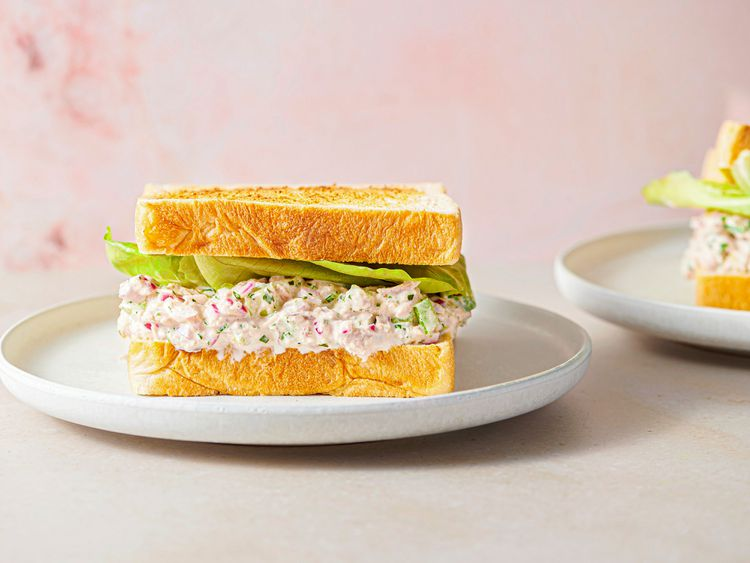

Back to Recipe Home
Tuna Salad

Description
Tuna salad is a family favorite. This version is classic in every way, but with a couple of subtle twists to amp up its flavor and texture.
Ingredients
- 1 medium red onion (about 8 ounces; 225 g), cut into 1/4-inch dice
- 1/2 cup (120 ml) red wine vinegar
- 4 (5-ounce; 140 g) cans oil-packed tuna, drained
- 1 cup (240 ml) mayonnaise, plus more as needed
- 2 stalks celery (about 6 ounces; 170 g total), cut into 1/4-inch dice
- 1 ounce (about 10 stalks) flat-leaf parsley leaves and tender stems, minced (about 1/4 packed cup)
- 1/2 teaspoon (3 g) Asian fish sauce or very finely minced oil-packed anchovy fillets (about 2 small fillets)
- Kosher salt and freshly ground black pepper
- 8 slices sandwich bread, very lightly toasted
- Romaine lettuce leaves, torn, for garnish
Steps
- In a small bowl, combine onion and vinegar (vinegar should just cover onion; add more if it does not) and let stand 15 minutes.
- Meanwhile, in a medium bowl, combine tuna and mayonnaise and mix very well with a spoon until tuna is reduced to very small shreds.
- Drain onion well, then add to tuna along with celery, parsley, and fish sauce or anchovy. Mix until well incorporated, then season with salt and pepper. Add more mayo, 1 tablespoon at a time, if desired.
- Spoon tuna salad onto 4 bread slices, top with lettuce leaves, then close sandwiches. Serve right away.